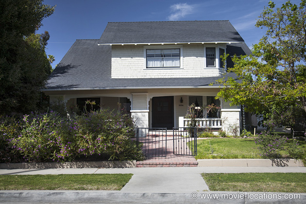
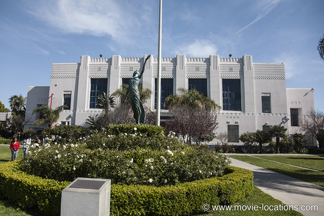
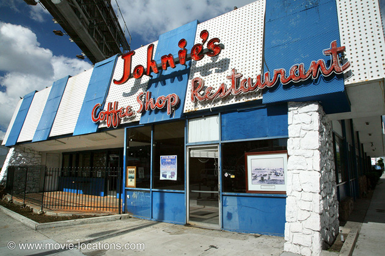

American History X
Main Content

Controversy when Ed Norton allegedly re-edited the film to increase his role, and director Tony Kaye all but disowned the film. But it's undeniably Norton's fiercely intelligent performance that makes the movie.
Derek Vinyard (Norton) finds his White Supremacist past hard to shake off and, when his younger brother Daniel (Edward Furlong) heads down the same racist path, tragedy follows.
The neighbourhood of the Vinyard family is Venice Beach, Los Angeles’ Bohemian beachfront community increasingly troubled by gang-related problems. The home is 2206 Meade Place, just off Venice Boulevard, and only a few minutes away from the Dude’s abode in The Big Lebowski (as ever, please remember this is a private home and respect the current residents).

Daniel Vinyard’s ‘Venice Beach High’ is Venice High School, 13000 Venice Boulevard, Venice (which was seen previously in happier circumstances as 'Rydell High' in Grease).

Oddly, for inhabitants of Venice Beach, Derek and Daniel stop off, on the way to Venice High, at Johnie's Coffee Shop, 6101 Wilshire Boulevard at Fairfax Avenue, opposite the golden cylinder of the old May and Co department store in midtown Los Angeles. Johnie's closed down in 2000 and is now, unbelievably, yet one more Los Angeles landmark in need of conservation.
This streamlined, Googie-style Fifties coffee shop, which started life as Romeo’s Times Square, is where Anthony Edwards receives news of the impending apocalypse in the underrated thriller Miracle Mile, and features in both The Big Lebowski and Reservoir Dogs.
Visit Info
Visit The Film Locations
California | Los Angeles
Visit: Los Angeles
Flights: Los Angeles International Airport (LAX), 1 World Way, Los Angeles, CA 90045 (tel: 424.646.5252)
Travelling around: Los Angeles Metro